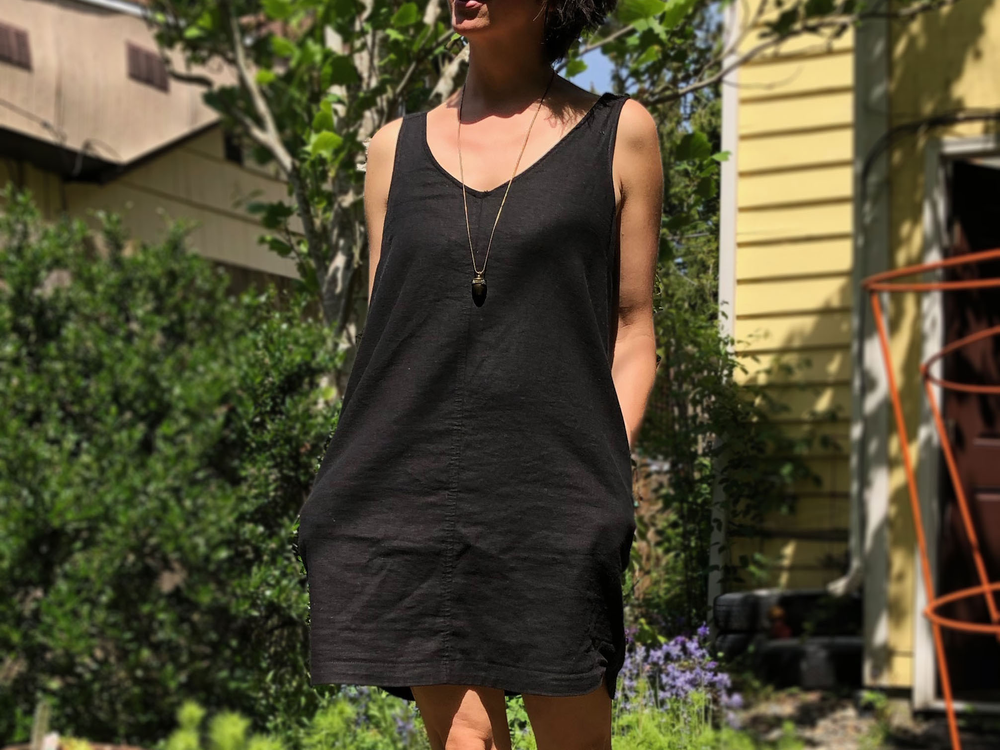
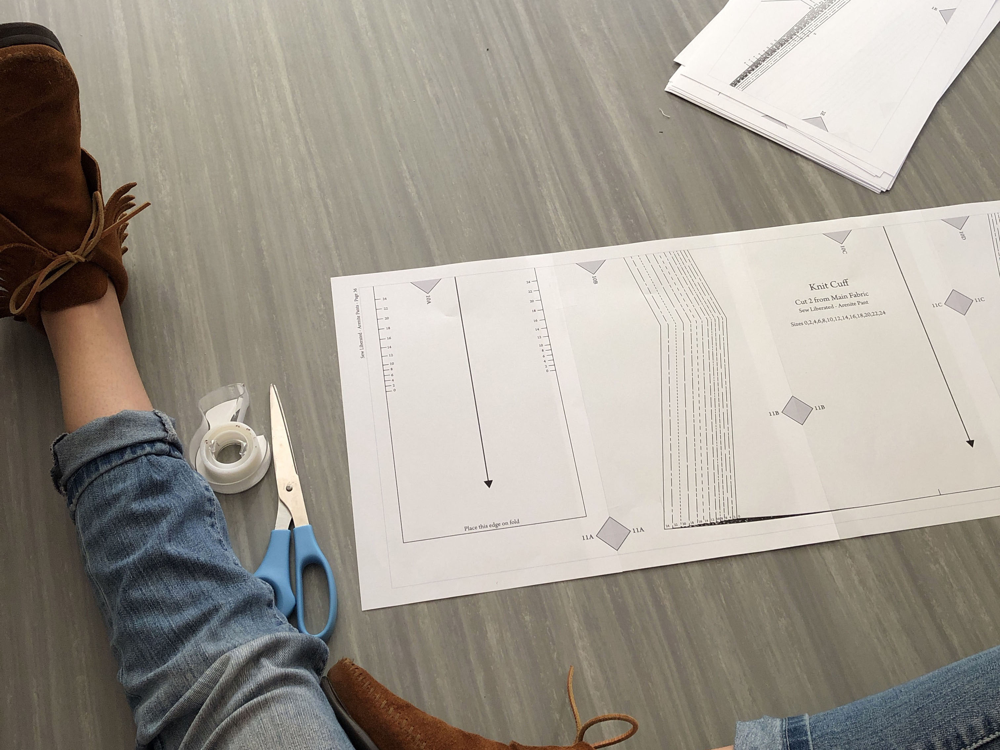

September 27, 2019
#Fall Fabric Stash

Fall is here and is my absolute favorite time of year. The leaves start to turn all my favorite colors. The sun is at a lower angle, given everything a nice glow, especially in the late afternoon. The air takes on a chill, giving me the opportunity to break out my comfy, knit sweaters...
read more
September 20, 2019
Copying a Favorite RTW Dress

I bought this dress pictured on the left at Old Navy a few years ago and despite it being, well, Old Navy and quite inexpensive it really was a nicely structured, well made garment. It was a made of a nice linen-cotton blend, lined with finished seams...
read more
September 13, 2019
Piecing Together a PDF Pattern.

A few years ago a friend of mine asked me if I knew how to sew. She was thinking of taking a class and wanted to know if I was interested. I had learned to sew from my lovely mom and had taught myself the rest along the way...
read more